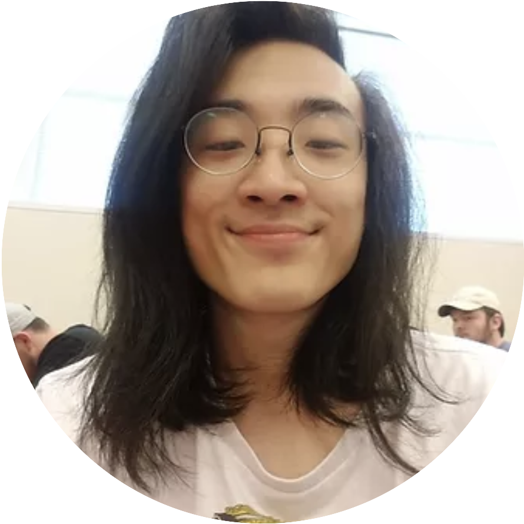

MUSE
Goal Directed Design Project

Role:
Project Timeline:
Interaction/Visual Designer
10 Weeks (February 2020 - April 2020)
| Role: | Project Timeline: |
|---|---|
| Interaction/Visual Designer | 10 Weeks (February 2020 - April 2020) |
Premise
For my Senior Project class project, my group sought out to create a mobile app catered to songwriters who were seeking ways to overcome "writers block". The goal of this project was to carry out a Goal-Directed Design project. Goal-Directed Design is a process that follows a series of steps including creating personas, developing use cases/scenarios, prototyping to create a product, and reiterating on your ideas as you test your product. Several features intended to spark inspiration were integrated into the prototype to help songwriters during their songwriting process.

MUSE Final Demo/Walkthrough
Meet Our Team
|  | |||
|---|---|---|---|
| Leo Serres | Connor Campbell | Brian Ra | Tyler Henn |
| Team Lead | UX/UI Designer | UX/UI Designer | UX/UI Designer |
Research
In this project, we used the Goal-Directed Design method. We started our process by doing a literature review, competitive analysis, interviewing users that met our demographic, and constructing our persona hypothesis. Our goal was to create an application that would provide ways a user could over come mental blockage in areas where competitors were lacking. Being a songwriter myself, I sought out to find solutions to my own real life problems. Having group members who are also involved with creating music made for effective collaboration.

Table showing where competitors lack in features
After looking through our competitors, we started looking at what our potential ideal user would look like. To find this information, we thought about the people around us who are song writers. Having experience in the music scene allowed me to have a general understanding of what our potential demographic would look like. We also did some further research looking at statistics of what the average age of song writers is. Once we narrowed down our general demographic, we sought out to interview people we thought matched our potential users.
These interviews further confirmed that there was indeed a market for an app like Muse. Potential users were very fond of the idea of being able to use an "all in one" app to aid their songwriting process
Modeling
Once our team felt enough research was gathered, we moved onto affinity mapping our ideas out to create our personas (artificially-created users through actual research).
We grouped similar ideas and found the following:
- Demographic (age, race, sex, etc.)
- User Wants and Needs (Get over writer's block, feel inspired and motivated)
- Frustrations (Feeling uninspired and unmotivated, prolonged periods of not writing anything meaningful)
- Goals (Overcome writer's block, feel accomplished)
Affinity mapping allowed us to quickly write and organize our ideas for the hierarchy of MUSE.
Meet our Personas
Our personas were created with the research we gathered in mind first. We wanted to keep everything as realistic as possible in order to create user stories using our personas.
After our personas were given biographies, goals, and frustrations, we moved onto creating context scenarios for each persona. Context scenarios are a form of story-telling that gives context to how our users would want to use our product. Context scenarios are important for they give an idea for how and when a potential user would use our app in a real life situation.
Requirements
Now that we had "potential users", we could develop real-life scenarios in which our app could provide a solution to their frustrations when feeling mentally blocked. Below are the user stories our group crafted for each persona. We created a list of persona expectations/user needs to give us better insight on how to construct our context scenarios (user stories and how our personas will interact with our app in their daily lives).
User Expectations/Needs: App Features
- Writing Aid (set parameters, genre, and mood)
- Notepad (document writer)
- Add instrumental tracks (ability to loop sections of songs)
- Suggestion generator (rhymes, synonyms, lyrical placement)
Context scenarios show how users would potentially interact with our app in a real life scenario.
After we wrote down features users would expect out of our product, we moved onto creating key path scenarios which helped us begin to map out our app.
Framework
Once our personas had set goals and expectations in relation to our product, we began site-mapping and creating key path scenarios for our personas. Site-mapping allows us to figure out the application's interaction hierarchy based on the research we gathered.
Creating a sitemap allows for easy visualization of an application's hierarchy before development.
We found that having a scenario to look back on for interaction hierarchy purposes made our decisions hold validation. We were able to explain to each other why/why not certain arrangements could potentially confuse users.
Keypath scenario of our primary persona, Geoff, based on our app's sitemap
Once we got an idea of the hierarchy of our application's navigation, we started to building medium-fidelity prototypes. Our group took turns explaining their individual sketches/ideas, and when we felt we were all pleased with the results and how they match our persona's goals/expectations, we sketched a final design to reference back to once we started medium/high-fidelity prototyping.
Medium Fidelity Prototyping
Based on our sketches, our group started prototyping in Figma. To make sure the team was on the right page throughout this phase, our group had voice conferences and would meet up in person to discuss changes that should be made. We regularly made sure the interactions made sense. We would also look back on our key path scenarios, making sure we stayed focused on the user first.
Medium Fidelity Prototype: Home screen and setting parameters for notepad.
As we continued on with the prototyping stage, we still had the challenge trying to integrate the keyboard features. We took influence from existing keyboard features from applications such as "Grammarly" to provide us with conventions that could be taken advantage of. Since our features were a rather new idea, we decided playing to our users' prior knowledge as much as possible would help us create useful solutions.
Medium Fidelity Prototype: Notepad text editor features.
User Testing
Once we had a functioning prototype, it was time to test users on its features and make sure that it was intuitive and easy to use. Unfortunately, users did not understand some of the features or how to use them. We went back to the drawing board with some of our features and then started to create our high fidelity prototype.
Medium Fidelity Prototype Home screen user testing results.
Medium Fidelity Prototype Notepad user testing results.
Our goal for this application was to create an environment that would promote inspiration and encouragement to aid writers through their blocked mindsets. Although we found we were on the right track in terms of idea, we found that our application had several "pain points" where users were not only confused, but not interested in some features. We knew we had to go back to the drawing board and see where further changes could be made.
Medium Fidelity Prototype text editor features user testing results.
Reiterate: Back to the drawing board
After conducting some user tests, we found that there were several features that were unclear to our users. The problem stemmed from the fact that people were not entirely sure what the purpose of our app was. There is overlap from multiple types of applications (ie. document writer, notepad, keyboard features, motivational app) which caused some confusion with users.
We decided to make the following changes based on our user tests:
- Give Context (add on-boarding screen)
- Use more conventions (simplifying features)
- Reorganization (pages looked cluttered)
Medium Fidelity Prototype: On-boarding screen.
Takeaway
Our goal for this product was to solve a problem that every song writer faces: writer's block. A state in which one feels it is impossible to write anything down. Through research, we found common causes and solutions to writer's block, then we conducted user interviews to create personas that matched our potential users. Using these personas as references, we created scenarios to figure out how, why, and when our personas would use our application. All this acclimated into our prototypes which went through several iterations.
We found that writer's like artists, just need some guidance towards the right direction. I believe we tried our hardest to create an application that caters to user needs, specifically those who are song writers who feel unmotivated or uninspired (which is a very common thing among musicians). I'd like to personally thank my team for their hard work through this semester (as well as a global pandemic).
Once again, I'd like to present MUSE.
Click the image to view the final prototype.